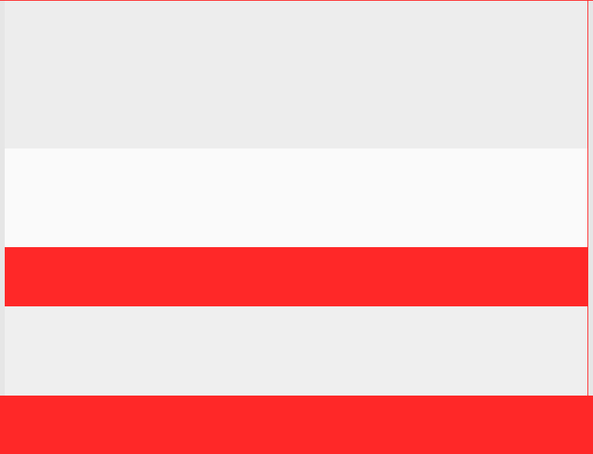
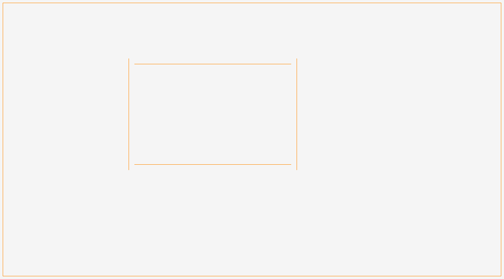
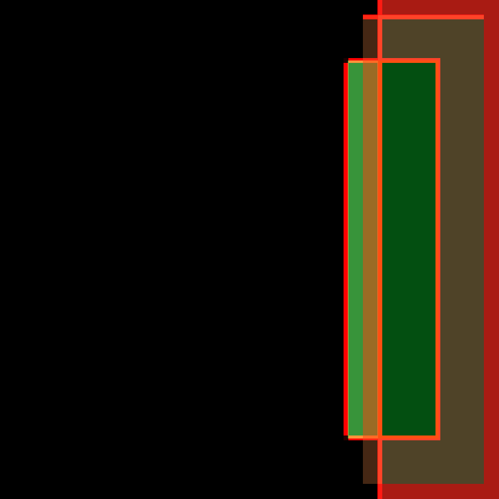
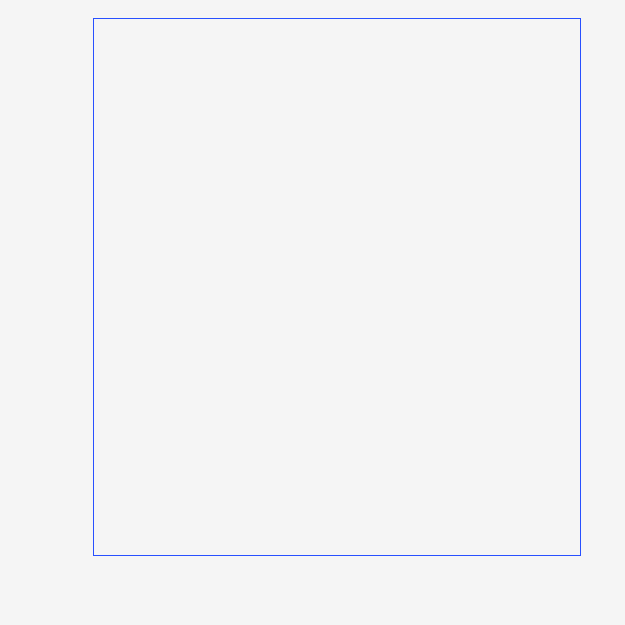
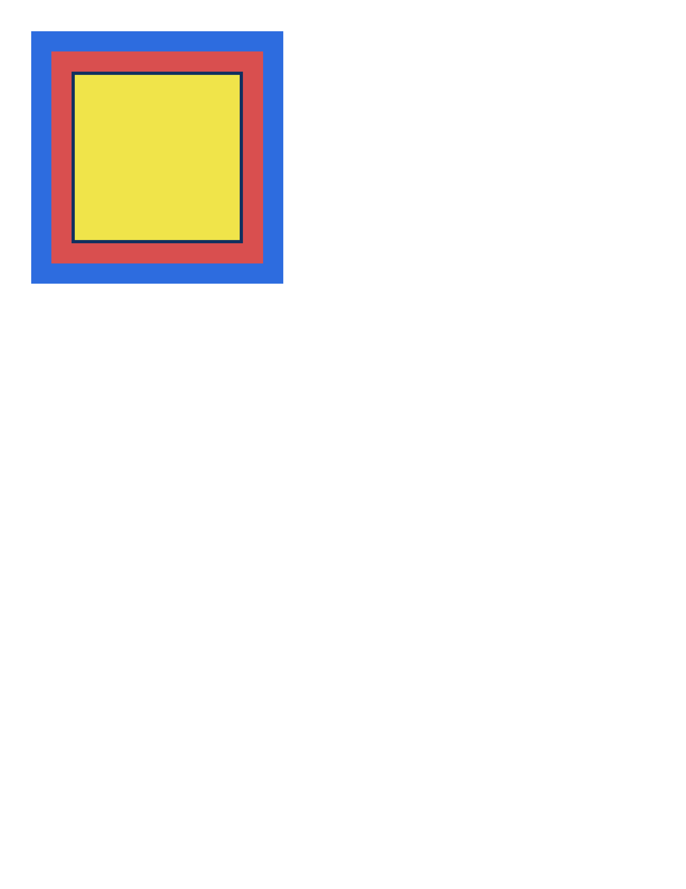
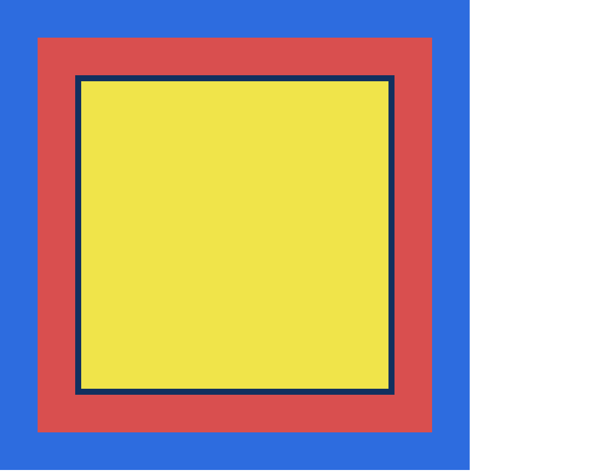
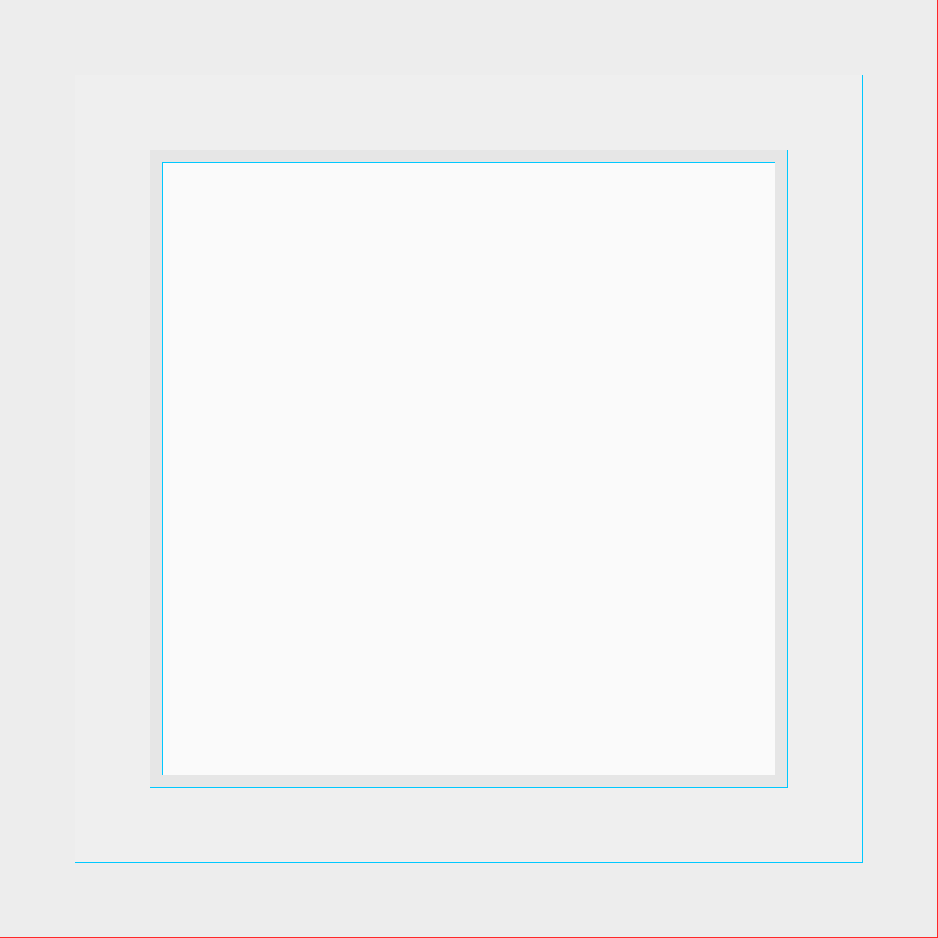
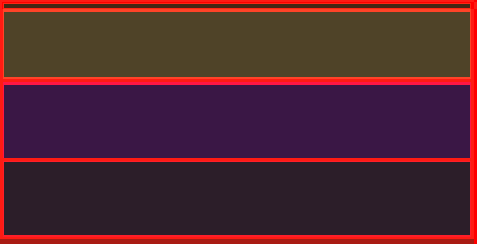
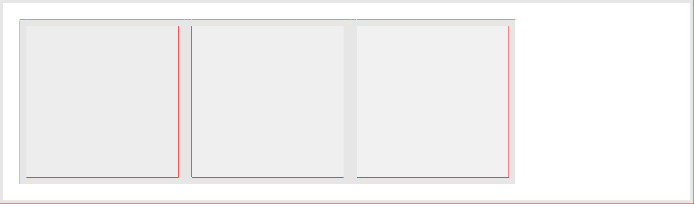
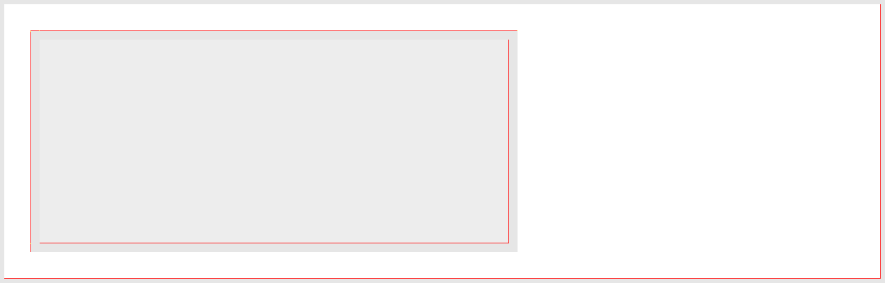

width-height — 100.00% all categories ↑
PASS 0.76% block-width-height-explicit · explicit-px


Single block with explicit width:240px height:120px and a 4px border; baseline box dimensions.









